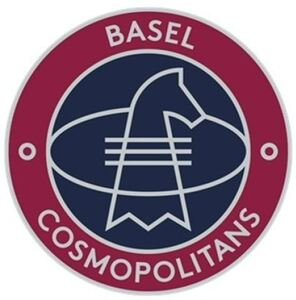

Trade Mark Journal No.2025/029 18 July 2025
WO0000001862654 (25,35,41)
Office of origin: Benelux Office for Intellectual Property (BOIP)
Date of International Registration:19 March 2025
Date of designation in the UK:
19 March 2025

Two circles, the outer circle red and the inner circle dark blue with white letters.
International priority date claimed: 19 September 2024
(Benelux Office for Intellectual Property (BOIP))
(1511105)
- Class 25
- Clothing, footwear and headgear.
- Class 35
- Advertising, marketing and promotional services; promotional services for athletes, sports teams and sporting events; organization and mediation of advertising and promotional contracts for athletes, sports teams and sporting events; organization of advertising and event marketing; distribution of advertising via banners and online; management of promotional matters for athletes, sports teams and sporting events; business analysis, research and information services; business assistance, management and administrative services; event marketing and advertising, including the promotion of goods and services of third parties, including through sponsorship and licensing agreements in the context of national and international sporting events; arranging and conducting marketing promotional events for others; organisation of events for commercial and advertising purposes; organization of events, exhibitions, fairs and shows for commercial, promotional and advertising purposes.
- Class 41
- Advice regarding the organisation and design of sporting events; organization, design and implementation of sporting events; organization, design and implementation of recreational, educational, ceremonial and cultural events; ticket reservations and bookings for sporting events; compiling and publishing calendars in the field of sporting events; providing facilities for sports events; organization, design and implementation of sports tournaments; organisation, organization and implementation of sports activities and sports competitions, relating to equestrian sports and jumping; organizing, organizing and executing games, competitions and contests related to equestrian sports and jumping; betting services.
Global Champions GCL B.V
Representative: Algemeen Octrooi- en Merkenbureau B.V., Postbus 645, NL-5600 AP Eindhoven, NETHERLANDS